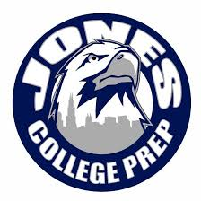

Navigation
Professional Resume
Polar Bears
Flag Football
Tory Smith Resume
Education
Senior at Jones College Preparatory High School
GPA Unweighted: 4.0
GPA Weighted: 5.3
Honor Roll (2021-now)
8 AP Classes
2 Dual Enrollment Classes

Extracurriculars
Varsity Basketball - 4 years
Varsity Flag Football Captain - 2 years
Koding with Klossy Program - Sophomore Summer
Women in Stem Study Abroad - Junior Summer
Volunteer Work at a Local Farmers Market - Senior Summer
Online Intro to Environment Class through UIUC - Senior Summer
Service Squad Club at Jones - 4 years
RAINN club at Jones - 4 years
Led a Basketball Clinic for young girls - Sophomore Year